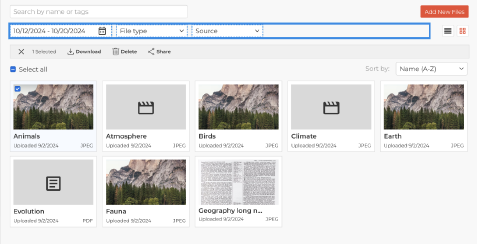
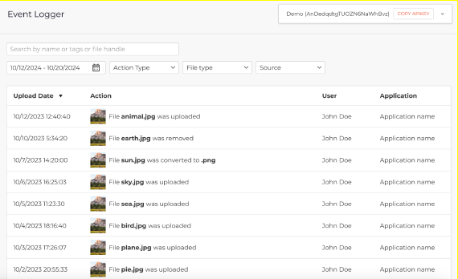

Overview
The Filestack Digital Asset Management (DAM) is a comprehensive interface within the Developer Portal designed to give you direct control over your application's assets. It includes robust tools for searching, organizing, and modifying your files, alongside a detailed Event Logger for auditing purposes.
Digital Asset Management (DAM)
List and Block Views
The DAM provides two primary views for browsing assets. You can toggle between a List View which shows file details in sortable columns, and a Block View which displays asset thumbnails.
Each asset in both views has an options menu for quick actions like Download, Edit, Share, and Delete.
Advanced Search & Filtering
Quickly locate specific files using advanced search functionality. You can search by file names, handles, tags, and metadata. You can also filter by:
- File Tags
- File Types (e.g., Image, Document, Video)
- Upload Date Range
- Upload Source
Integrated Uploading & Transformations
Upload new assets directly within the DAM using an integrated Filepicker. For image assets, you can perform transformations like resizing and cropping from the Edit View.
Metadata Management
In the Edit View, you can manually add, edit, or remove tags and descriptions for each asset. Changes are saved in real-time and are immediately reflected in search.
Event Logger
The Event Logger provides a complete, searchable audit trail for actions performed on your assets. The interface allows filtering by action type, file type, and date range.
Tracked Events
| Event | Description | Logged Details |
|---|---|---|
Upload |
A new file was uploaded. | Action, User, Timestamp, Application |
Edit |
An asset's metadata was modified. | Action, User, Timestamp, Application |
Transform |
An asset was converted or transformed. | Action, User, Timestamp, Application |
Delete |
An asset was removed. | Action, User, Timestamp, Application |
Role-Based Access Control
Access to the DAM and Event Logger is managed via the Asset Manager role. This role grants full access to all DAM functionalities but restricts access to other sensitive areas like Billing or API configurations.